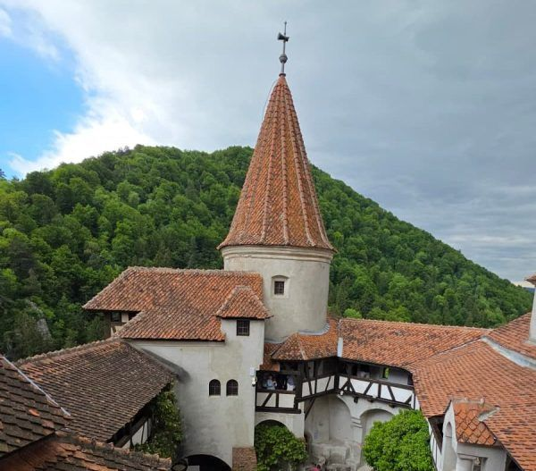
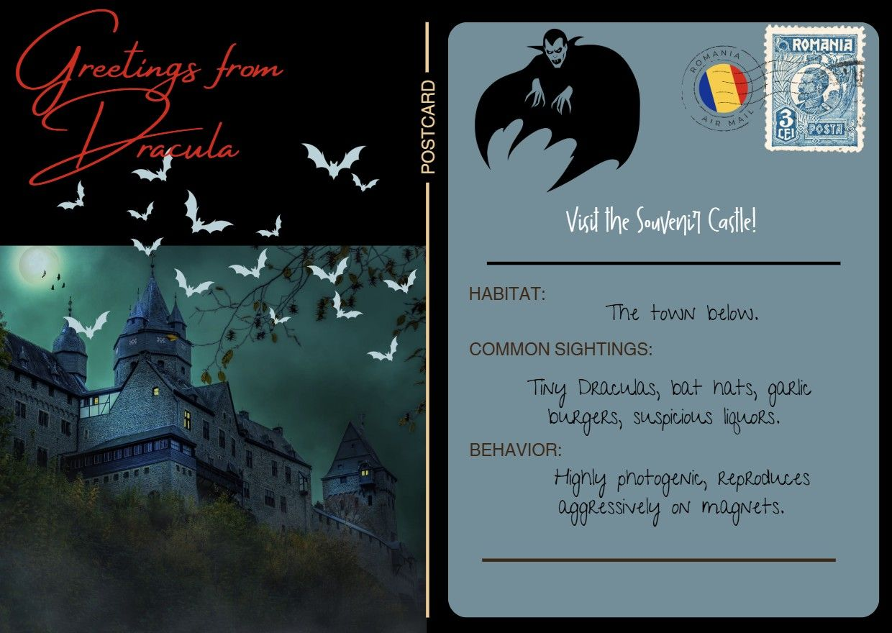
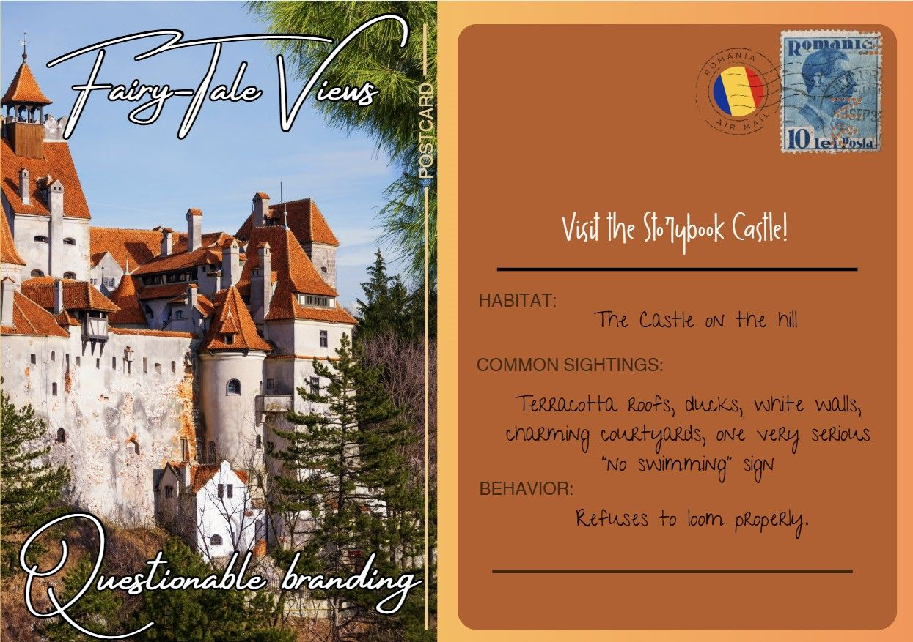
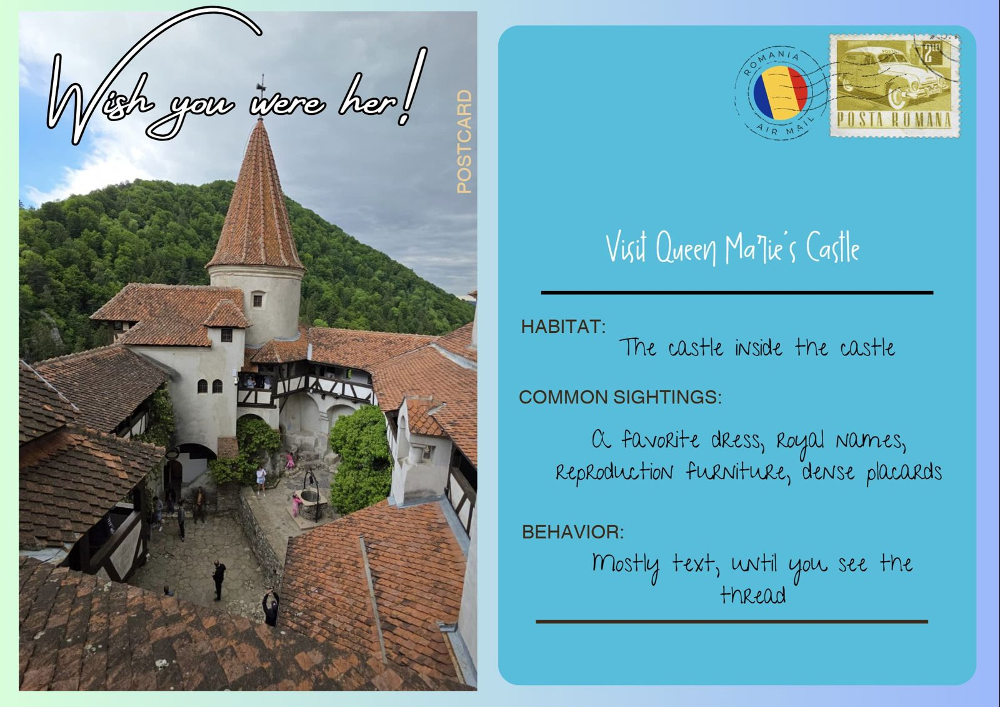
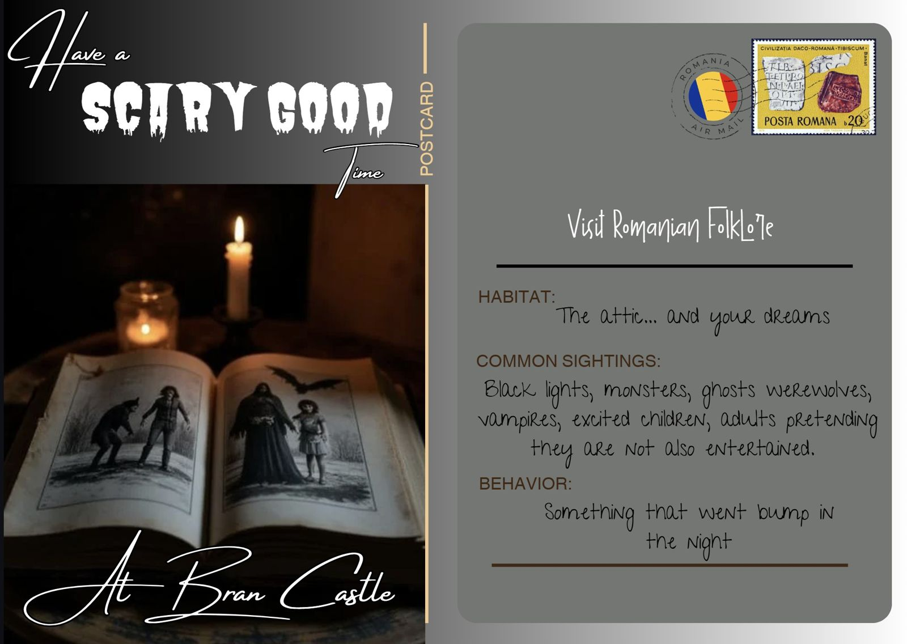
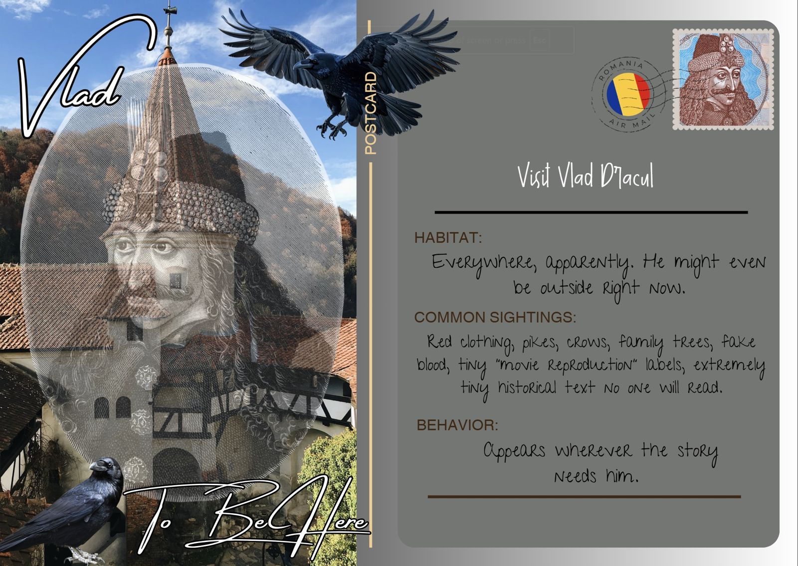
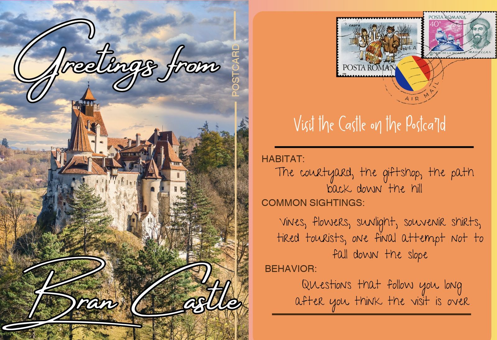
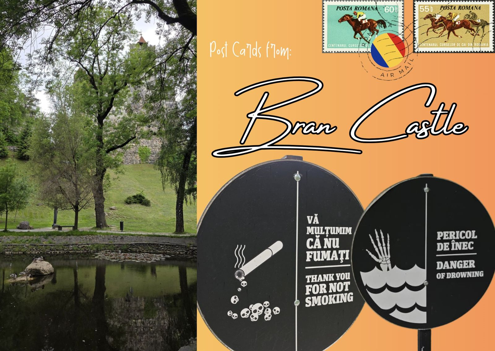

Journey 07 · Romania Note 7 of 7 Field Note
Which Castle Are You Visiting?

Everyone told me to visit Bran Castle. The problem is that no one seemed to mean the same one.

The castle sits on a hill overlooking Bran village, but to reach it, you first walk through the version of Bran that knows exactly why you are here.
But before I saw the castle, I saw Dracula.
He was tiny. He was printed on shirts. He was carved into goblets. He was attached to magnets, postcards, monster stickers, and enough vampire-adjacent souvenirs to stock a respectable Halloween aisle. A person dressed as Vlad the Impaler wandered down the row of shops, passing tourists who were examining magnets, trying on hats with bat wings, and deciding which version of Transylvania they wanted to carry home in a bag.
Between the shops selling things were shops selling food: garlic burgers, lemonade, desserts, traditional Romanian dishes, and real Transylvanian cheese. This felt appropriate: If you are going to build an entire tourist economy around vampires, you might as well commit to the garlic.
The brand of Bran, at least at the bottom of the hill, is Dracula.
It is printed on shirts, poured into bottles, carved into goblets, and sold with magnets. Before you ever see the castle, you know what story is waiting for you.
You are here for the vampire. Or at least, that is what the market assumes.
And to be fair, it is not wrong. Dracula is why many people come to Bran Castle. Search “Dracula’s Castle,” and the internet will almost certainly send you here. It is why the place is famous far beyond Romania, and why tourists from half a dozen countries can walk through the same crowded market and recognize the same visual language immediately: bats, blood, fangs, capes, crows, castles, darkness.
Even the occasional sparkling vampire makes an appearance, always balanced with a werewolf.
Nobody has to explain Dracula.
He does not need a carefully researched placard. He does not need a museum wall full of dates and dynasties. A black cape, a sharp collar, a little theatrical menace, absolutely no glitter and everyone knows who has entered the room.
At the foot of Bran Castle, the story was alive. The funny thing was that the castle above all of it didn’t get the memo.

To reach the actual castle, you walk uphill. No, that’s not entirely true. You scale a very small mountain.
This feels important to mention because, after the garlic burgers, tiny Draculas, and bat-wing hats, the most threatening thing about Bran Castle was not a vampire: It was cardio.
The castle rises above the village, but the path toward it passes a small pond filled with lily pads and ducks. Beside the pond, a warning sign features a skeletal hand reaching up from the water. Nearby, a no-smoking sign shows a lit cigarette whose ashes become a pile of skulls.
The signs were trying very hard. The ducks were not.
Despite the insistence of the T-shirts, mugs, warning signs, and black-and-white souvenir imagery, the grass was green. The sky was blue. The ducks were quacking. Bran Castle itself was not black or broken or hunched against the horizon. It was a lovely shade of off-white, with terracotta roof tiles, pointy towers, and decorative details that looked more charming than cursed.
There was no lightning. There were no bats spiraling out of the windows. No skulls had been impaled on the towers, which seemed like a missed branding opportunity but a reasonable architectural choice.
From below, Bran Castle did not look like the lair of an ancient vampire. It looked like a small castle in a cheerful kingdom where bakers wake up early, children befriend enchanted animals, and someone’s youngest son eventually solves a problem no one else understood, possibly a brave little tailor. The town around it did not hurt the effect. Bran sits tucked between green mountains, tall trees, alpine air, and the sort of blue sky that makes theatrical darkness harder to sustain.
Inside the castle, the feeling continued. The walls were white. The doorways were small. The inner courtyard was bright and charming, with people leaning in the sunlight and looking up at the open windows. After walking through an entire village economy of theatrical darkness, I had expected the castle to participate a little more enthusiastically.
Instead, it kept offering sunlight.

Inside Bran Castle, the rooms are smaller than I expected.
They are still open and spacious, with not enough furniture to fill the space but more than enough people to compensate. But, the doorways are low, the walls are bright white and the beams are exposed. The windows open toward mountain air, rooftops, courtyard light. Many of the fireplaces are covered in beautifully painted ceramic tile, a small detail that makes a room feel less like a defensive structure and more like somewhere a person once lived and sat near the heat.
There are hearts in the doors.
Some are knockers. Some are small openings cut into the wood, centered like secrets. A heart-shaped window into a closet, a heart-shaped opening into a little room. A detail too specific to be accidental and too gentle to belong to a vampire’s castle.
This was where I met Queen Marie.
At first, I did not know what to do with her. Her name appeared again and again, but the castle did not present her with the same easy visual confidence it gave Dracula or Vlad or the many serious male faces lining the entryways. Her rooms were marked with painted doors and bright fabrics, her favorite dress was displayed. Her family appeared in panel after panel: King Ferdinand, Princess Ileana, King Carol, royal titles, political dates, family relationships, historical context.
The castle did not hide her exactly, but the dense signs filled with tiny typeface felt like it assigned her as reading homework.
That difference became harder to ignore as I moved through the rooms. Dracula was everywhere before I even reached the gate. He had souvenir stalls, theatrical fonts, plastic fangs, goblets, garlic jokes, haunted houses, and a whole village below the hill repeating his name in one form or another.
Queen Marie was also everywhere in the castle, but mostly in text.
Long, dense text that you expect to find in third period study hall, not a castle on a hillside with crowds of people milling through. These were the kinds of signs that required you to stop walking, interrupt the flow of people behind you in the small space, and stand still long enough to connect names, dates, marriages, inheritances, wars, and political aftermaths.
Most people did not do that.
I do not mean that as criticism: I did not do it either. The rooms were crowded, and the route through Bran Castle keeps moving. Enter a room on the left, follow a snaking path through, and exit near the same entry point on the right. There is always someone behind you, someone beside you, someone trying to angle around a doorway or take a picture through a gap. The furniture was sparse, and much of what I saw was reproduction, but the crowd of people easily filled what space the exhibits did not. Bran may be the most famous castle I visited in Romania, but it also felt like the most curated, as though the building had been asked to hold several versions of itself at once and had only so much space to give each one
Even so, Queen Marie kept slipping through the curation.
She was in the heart-shaped openings cut into the doors, in the tiled fireplaces, in the white walls and exposed beams, in the windows that made the rooms feel less sealed off from the world than I expected a castle to feel. The more I moved through those rooms, the more I had the sense that someone had tried to soften the place from the inside, working with old walls, narrow passages, and limited square footage to make a fortress feel livable.
I did not leave those rooms knowing Queen Marie’s story, not in any real way. I snapped photos of dense text on signs to read later, made mental notes to ask questions.
At Bran, I only knew that she kept appearing, and it had to be for a reason. A dress, a heart in a door, a fireplace. A name repeated often enough I could feel the outline of someone I did not yet understand, and I started wondering why I had not heard more about her before.

By the time I reached the rooftop terrace, Bran Castle had already changed stories several times.
There had been the Dracula market below the hill, the cheerful castle with its white walls and terracotta roofs, and the specter of Queen Marie in rooms with their hearts and fireplaces and dense walls of text. Then I climbed a little higher, reached one of the best views of the whole visit, and somewhere around that point the historical placards stopped and the folklore placards began.
From here, the rooms became smaller and darker. Fog machines and black light created the atmosphere the castle below had been promising from the beginning. Children who had been completely uninterested in seeing another room with old furniture and too much reading were suddenly alive again, squealing when a monster appeared on a screen or a ghost seemed to materialize in front of them.
Honestly, fair.
There is only so much furniture and white walls a child can be expected to admire before a castle needs to produce a werewolf.
The placards in these rooms were still long and detailed, but the room no longer depended on people reading every word. The text explained Romanian folklore: ghosts, werewolves, vampires, spirits, and creatures whose names I am almost certainly remembering or spelling wrong. The staging did the rest.
It was fun. It was atmospheric. It was also a bit much, in the way tourist hauntings are often a bit much, because restraint is not usually the point of a black light.
But it worked.
The crowds were thicker here. People slowed down. Children pointed. Parents took pictures. Tourists who had been drifting through the royal rooms with the polite exhaustion of people trying to absorb one more historical relationship suddenly knew where they were again.
“Vampire!”
“Ghost!”
“Werewolf!”
“Dracula!”
The words around me shifted from Romanian to English to Chinese to German to Spanish to French, but the recognition was immediate. The folklore was Romanian, but the shape of the story was familiar across a dozen languages. Maybe not everyone has Dracula, exactly, but most people seem to know something about the thing in the dark, the warning at the edge of the woods, the dead who do not stay where they are put, the animal that is not only an animal.
For a few rooms, Bran became dark, theatrical, crowded, and delighted with itself. It gave people the monsters they had come for, and people responded with the relief of finally being allowed to enjoy the obvious thing.
Then, as quickly as it began, it ended.
A narrow staircase later, I was back in the bright castle again.

This was a little jarring. One room earlier, there were fog machines, ghosts, monsters, black light, and children being happily startled by things appearing on screens. Then Bran Castle seemed to remember it was also a cheerful white-walled castle with sunlight and a courtyard and windows overlooking the village.
And then there was Vlad.
His iconic outfit appeared first, or at least the version of it that has become iconic: red shirt, dramatic hat, pointed shapes, clothing that announces immediately that a man is either a prince, a threat, or extremely committed to branding. Nearby were swords, shields, pikes, and very, very small signs that said “movie reproduction” and almost nothing else.
A few rooms away, and a room dedicated to “the inspiration of Dracula” was doing a lot.
There was a life-size statue of Vlad the Impaler in his red clothing, surrounded by pikes topped with mannequin heads dripping obviously fake blood from what looked like Spirit Halloween masks. Images of crows flew across the walls, casting shadows and cawing. A large family tree dominated one side of the room. Another wall held what appeared to be an entire textbook worth of information on Vlad Țepeș, projected in text small enough that reading it would have required both commitment and a magnifying glass.
No one seemed especially interested in the textbook wall.
That is not a criticism so much as a practical observation: The room had crows, pikes, fake blood, a life-size Vlad, and people moving in all directions trying to take pictures with him. The information was there, technically, and it was even abundant. But the room was not really asking visitors to read about Vlad as much as it was asking them to recognize him.
And people did.
At Bran Castle, Vlad is complicated because his actual connection to the place is tenuous at best. I have already written more directly about Vlad Țepeș, Dracula, and the strange overlap between history, violence, local memory, and tourist mythology. Bran does not need me to repeat all of that.
Besides, the strange thing I have learned about Vlad in Romania is that he does not seem to require one castle.
Probably he showed up at Bran. Or didn’t. Who knows? According to tourist signs all over this country, Vlad was everywhere, all the time, all at the same time.
Which might be the point. He was powerful because, in the stories people told about him, he might appear anywhere.
He belonged to Wallachia, to the borderlands, to the battlefield, to the roads between towns and fortresses. He belonged to the uneasy feeling that the prince might not be in his castle at all.
The prince might be outside right now. So perhaps you should be behaving yourself.
That version of Vlad does not need Bran Castle to be “his” in any clean historical sense. If anything, pinning him too neatly to one building makes him smaller. The room full of pikes and crows was excessive, yes, but it was also pointing toward something real about reputation. Vlad’s power was never only architectural, it moved with the stories people told about him.
Which is probably why he can be in the market below, in the exhibit upstairs, on the shirt I bought, in the stories my tour guides told me, and in towns and castles across Romania that all seem to have their own claim on him.
Vlad did not live at Bran Castle in the way the souvenirs imply. He lived in the warning.

After Vlad, Bran Castle led me gently back into the courtyard.
This felt almost rude, honestly. One minute there were pikes, crows, fake blood, and the historical anxiety of a prince who might be outside right now. The next minute there were vines, flowers, sunlight, and people lounging near the well as though the castle had not just been doing all of that upstairs.
Somewhere underneath us, according to the signs, were tunnels once used as a kind of early elevator. Now they had become a VR experience where children could travel through time as knights and princesses, which felt like the most Bran Castle thing possible: Even the infrastructure had been asked to become a story.
The gift shop was full of Vlad the Impaler, though not as much Dracula. Dracula belonged more fully to the town below, where he could spread out across liquor bottles, T-shirts, haunted houses, and bat-wing hats. Inside the castle shop, Vlad had more room. There were shirts and symbols and historical references, including the t-shirt with a twisted dragon sigil I eventually bought because it felt like the best compromise between myth and history.
Queen Marie was there too, but only a little. A few items, token gestures. Enough to confirm she mattered, not enough to explain why she had followed me through the whole castle.
I left the same way I had entered, trying not to tumble down the hill, passing back through the market where tourists were still examining magnets and deciding what kind of Transylvania they wanted to take home. You can leave Bran Castle with almost any version of the place you came to find. You can leave with Dracula, with Vlad, with folklore, with a tower against a blue sky, with a storybook courtyard, with a shirt, with cheese, with a bottle of something suspiciously themed.
I left with questions.
Later, when I asked my tour guide about the real story of the castle, the answer was not simple in the way tourist stories are supposed to be simple. Vlad mattered, but not because he lived neatly inside Bran Castle. Dracula mattered, but not because the castle had ever belonged to him. But Queen Marie mattered very deeply to the tour guide, and he spoke about her at length.
As we navigated twisting mountain roads, he told me about how Bran Castle had been given to her, and how dearly Romanians loved her. I learned that the communist years after World War II tried to dismantle that memory, or at least make it harder to hold on to. I learned enough to realize that the castle had not failed to tell me her story exactly, it’s just that her story was too large for a single sign of too small text.
Everyone told me to visit Bran Castle.
So I did.
I visited the souvenir castle, the storybook castle, the queen’s castle, the folklore castle, and Vlad’s castle. I visited the castle that tourists come to see and the castle that maybe sometimes goes unnoticed.
I came because Dracula was supposed to be there, and in a way, he was. But when I left Bran Castle, I was not thinking of vampires. I was thinking about hearts in the doors, and wondering who had wanted them there.

Originally published at fieldnotesfromabroad.com/2026/06/06/which-castle-are-you-visiting/